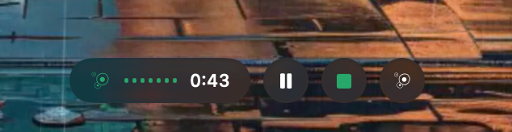
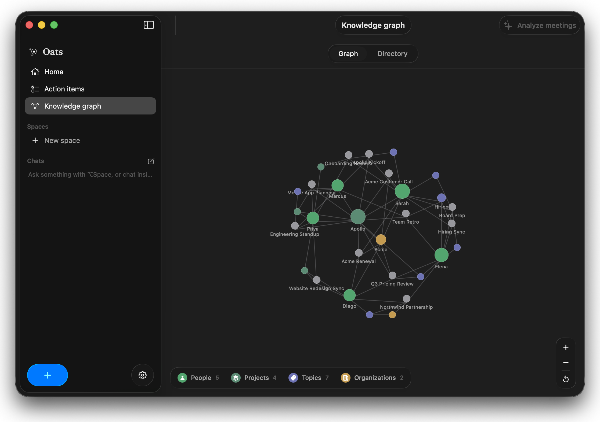
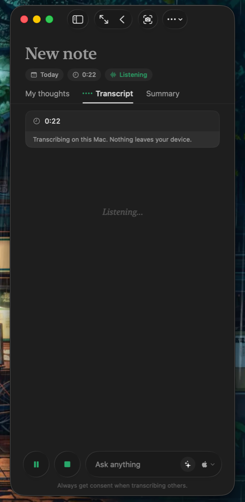
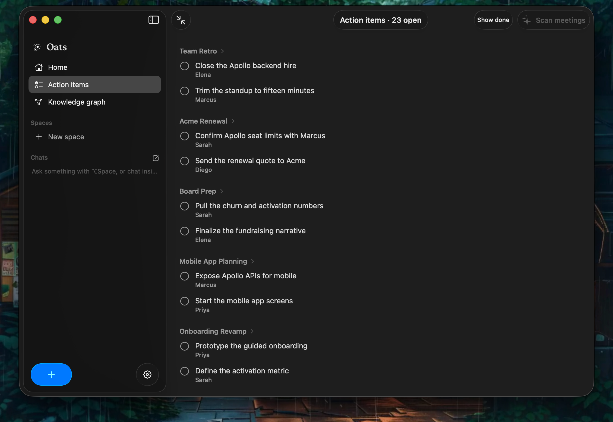

No bot joins your call. No audio leaves your machine. No account, no subscription. Oats records, transcribes, and writes the summary with a model that already runs on your Mac.


Press one button before the call. Everything after that happens on its own, on this Mac.
One click, or Opt M. Your mic and the call's audio, no bot in the room.
Live, on the Neural Engine, with speakers marked. Pause and resume any time.
The moment you stop: a clean summary, the decisions, and a title written for you.
Action items and a knowledge graph are filed automatically, across every meeting.
Opt Space summons a popup that answers from everything you have ever recorded.
Nothing joins the meeting. Nothing uploads. Oats listens from the corner of your screen and turns talk into memory.

Oats captures your microphone and the call's audio straight from the Mac. A quiet lozenge floats over the call with record, pause, and your live note one click away.
Shrink Oats to a slim column that docks next to the meeting window. The transcript rolls in live while you type your own thoughts underneath it.

Each "I'll send that over" becomes an action item tied back to the meeting it came from. One view holds everything you and your team agreed to do, checked off as you go.

"What did I miss?" "What did we decide about pricing?" "List this week's action items." A summonable popup answers from your own transcripts, streamed from your local model.
Grab a slide, a chart, or a whiteboard straight into the note. The text is read on-device and feeds the summary too.
The Ask popup floats over whatever you are doing, like Spotlight for your meetings.
A minute or two in, the note names itself. Your list is never a wall of "New note".
People, projects, and topics linked across all of your meetings into one local memory you can explore.
Calendar events show up on Home, and Record pre-titles the note with the event name.
Apache 2.0, built in Swift for macOS 26. Read every line that touches your audio.
Oats ships no model and no cloud. You choose what runs, it downloads once, and everything stays on this Mac. No API keys, no Oats server.
The reasoning model is whatever you already have.
Apple's engine streams live. The others re-transcribe after the call for even higher accuracy.
Every meeting is a folder of plain files on your disk. Grep them, sync them, back them up, or delete them. No export button needed, because nothing was ever locked in.
meta.json title, date, duration transcript.jsonl every line, with speaker and timestamp note.md your own rich-text notes summary.md the generated summary chat.jsonl your questions and answers audio.m4a the recording assets/ screen captures
Everything Oats does, from listening to summarizing, happens on your Mac. Recording is always visible while it runs, and consent stays where it belongs: with the people in the room.